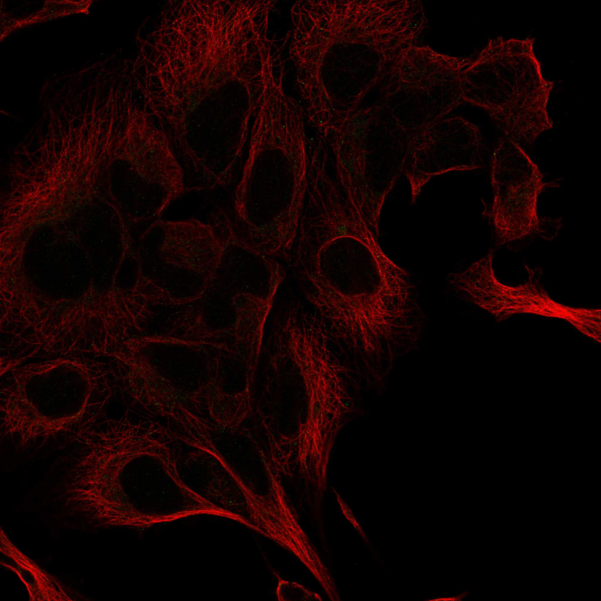

type: protein-evaluation gene: "UNCX" date: 2026-06-02 tags: [protein-scout, nucleoplasm, evaluation] status: scored pm: 17 ---
UNCX 核蛋白评估报告
1. 基本信息
| 项目 | 内容 |
|---|---|
| 基因名 / 别名 | UNCX / UNCX4.1 |
| 蛋白全称 | Homeobox protein unc-4 homolog |
| 蛋白大小 | 531 aa / 53.7 kDa |
| UniProt ID | A6NJT0 |
| AlphaFold | AF-A6NJT0-F1 (v6) |
2. 评分总览
| 维度 | 得分 | 满分 | 加权后 | 关键证据摘要 |
|---|---|---|---|---|
| 核定位特异性 | 7/10 | ×4 | 28 | HPA Approved Nucleoplasm; UniProt Nucleus (ECO:0000255); GO chromatin ISA + nucleus IEA |
| 蛋白大小 | 8/10 | ×1 | 8 | 531 aa (400-600 范围) |
| 研究新颖性 | 10/10 | ×5 | 50 | PubMed strict=17，≤20 档，极高新颖性 |
| 三维结构 | 3/10 | ×3 | 9 | 无 PDB 结构; AF mean pLDDT 57.4, 45.4% <50 |
| 调控结构域 | 10/10 | ×2 | 20 | Homeobox 结构域 (IPR001356, PF00046)，经典 DNA 结合域 |
| PPI 网络 | 4/10 | ×3 | 12 | STRING 15 互作伙伴; 无 IntAct 实验记录; 发育相关网络 |
| 互证加分 | -- | -- | +0 | 无显著互证 |
| 加权总分 | 127/180 | |||
| 归一化总分 | 70.6/100 |
3. 详细分析
3.1 核定位证据
| 来源 | 定位 | 可信度 |
|---|---|---|
| UniProt | Nucleus (ECO:0000255) | 预测级 |
| GO-CC | chromatin (GO:0000785, ISA:NTNU_SB); nucleus (GO:0005634, IEA:UniProtKB-SubCell) | 中/预测 |
| HPA IF | Approved reliability; Nucleoplasm (main) | 高可信度 |
HPA IF 状态: Approved 级别可信度，HPA 明确显示 Nucleoplasm 定位。UniProt 仅预测级证据但 GO 有 chromatin 注释。
结论: HPA IF Approved Nucleoplasm 定位，UniProt 预测级。定位于核质，GO 含 chromatin 注释提示可能与染色质结合。
3.2 蛋白大小评估
评价: 531 aa (53.7 kDa)，处于中等偏大范围 (400-600)。
3.3 研究现状
| 指标 | 数值 |
|---|---|
| PubMed strict (Title/Abstract+gene/protein) | 17 |
| PubMed symbol_only | 25 |
| PubMed broad | 29 |
关键文献: 1. Sanchez RS et al. (2024). "Antagonistic regulation of homeologous uncx.L and uncx.S genes orchestrates myotome and sclerotome differentiation." *J Exp Zool B*. PMID: 38155515 2. Daniele G et al. (2017). "Epigenetically induced ectopic expression of UNCX impairs the proliferation and differentiation of myeloid cells." *Haematologica*. PMID: 28411256 3. Sammeta N et al. (2010). "Uncx regulates proliferation of neural progenitor cells and neuronal survival." *Mol Cell Neurosci*. PMID: 20692344 4. Rovescalli AC et al. (1996). "Cloning and characterization of four murine homeobox genes." *PNAS*. PMID: 8855241 5. He S et al. (2023). "Spatial transcriptomics reveals a conserved segment polarity program." *bioRxiv*. PMID: 36711919
评价: PubMed strict=17，极高新颖性。研究主要集中于发育生物学 (somite 形成、神经发育)，表观遗传调控有报道。
3.4 三维结构分析
| 指标 | 数值 |
|---|---|
| UniProt 长度 | 531 aa |
| PDB 条数 | 0 |
| AlphaFold mean pLDDT | 57.4 |
| pLDDT >90 | 12.1% |
| pLDDT 70-90 | 7.9% |
| pLDDT 50-70 | 34.7% |
| pLDDT <50 | 45.4% |
PAE 图:
评价: 无 PDB 结构，仅 AlphaFold 预测。pLDDT 均值 57.4（偏低），45.4% 残基 <50。Homeobox 结构域区域预期折叠较好，但 N 端/C 端区域可能高度无序。
3.5 结构域分析
| 来源 | 结构域 |
|---|---|
| InterPro | IPR001356 (Homeobox domain), IPR017970 (Homeobox, conserved site), IPR009057 (Homeobox-like domain superfamily) |
| Pfam | PF00046 (Homeobox domain) |
染色质调控潜力分析: Homeobox 转录因子，经典 DNA 结合结构域。通过 homeodomain 识别特定 DNA 序列调控靶基因。直接参与染色质/DNA 调控，潜力高。与 PAX9 等发育关键因子有功能关联。
3.6 PPI 网络
实验验证互作 (IntAct): 无 IntAct 记录。
STRING 预测互作 (combined score >0.4):
| Partner | Score | 实验分 | 功能类别 | 调控相关？ |
|---|---|---|---|---|
| MESP2 | 0.679 | 0.048 | Somite TF | Yes |
| PAX1 | 0.605 | 0 | Paired box TF | Yes |
| TBX18 | 0.562 | 0.126 | T-box TF | Yes |
| TBX6 | 0.547 | 0.071 | T-box TF | Yes |
| MSGN1 | 0.524 | 0.048 | Somitogenesis TF | Yes |
| RIPPLY1 | 0.508 | 0 | Transcriptional repressor | Yes |
| LFNG | 0.527 | 0.093 | Notch modifier | Yes |
| RIPPLY2 | 0.564 | 0 | Transcriptional repressor | Yes |
评价: STRING 15 个互作伙伴，无 IntAct 实验记录。PPI 网络集中于体节发育转录因子 (MESP2, TBX6, RIPPLY1/2, MSGN1)，功能一致性高但无直接实验验证。
3.7 多库互证
| 维度 | 来源 | 结果 | 是否一致 |
|---|---|---|---|
| 三维结构 | AlphaFold + PDB | PDB 0 | 仅预测 |
| 结构域 | UniProt/InterPro/Pfam | Homeobox 多库一致 | 一致 |
| PPI 网络 | STRING | 15 预测互作 | 单一来源 |
| 核定位 | HPA/UniProt/GO | Nucleoplasm | 一致 |
互证加分明细: 无显著额外互证加分。 总计: +0
4. 总体评价
推荐等级: ***oo (3/5)
核心优势: 1. 经典 Homeobox 转录因子，DNA 结合能力明确 2. HPA Approved Nucleoplasm 定位，核定位可信 3. 极高新颖性 (PubMed strict=17)，研究空间极大 4. 体节发育 TF 网络富集，功能方向清晰
风险/不确定性: 1. 无 PDB 结构，AlphaFold pLDDT 偏低 (57.4)，近半残基预测不可靠 2. 无 IntAct 实验互作记录，PPI 全部为 STRING 预测 3. 研究集中于发育生物学，无 TE 相关报道
下一步建议:
- [ ] ChIP-seq 鉴定全基因组结合位点，特别是 TE 区域
- [ ] 在发育体系中验证 UNCX 对重复元件的调控
- [ ] 解析 Homeobox 结构域的晶体结构（已有良好折叠预测区域）
5. 数据来源
- GeneCards: https://www.genecards.org/cgi-bin/carddisp.pl?gene=UNCX
- Protein Atlas: https://www.proteinatlas.org/ENSG00000164853-UNCX
- PubMed: https://pubmed.ncbi.nlm.nih.gov/?term=%22UNCX%22%5BTitle/Abstract%5D
- UniProt: https://www.uniprot.org/uniprot/A6NJT0
- STRING: https://string-db.org/network/9606.ENSG00000164853
- AlphaFold: https://alphafold.ebi.ac.uk/entry/A6NJT0

PPI 网络
| Partner | Source | Score/Evidence |
|---|---|---|
| MESP2 | STRING | 0.679 |
| PAX1 | STRING | 0.605 |
| UMOD | STRING | 0.592 |
| SYPL2 | STRING | 0.575 |
| MARCHF11 | STRING | 0.564 |
HPA IF 图像已本地嵌入。
PAE 图像说明: AlphaFold PAE 图像已重新获取并嵌入（见下方 PAE 图像修正块）；结构判断仍结合 pLDDT 与 PAE 综合判断。
<!-- AF_PAE_REPAIR_START --> PAE 图像修正（2026-06-05）: AlphaFold 提供 predicted aligned error 图像；此前“PAE 图像暂无数据”的表述为未获取/未嵌入导致。

<!-- DOMAIN_HUMANPPI_REPAIR_START -->
Domain/SMART 与 humanPPI 补充（2026-06-07）
SMART / UniProt domain
| Source | Data |
|---|---|
| UniProt | A6NJT0 |
| SMART | SM00389; |
| UniProt Domain [FT] | 未检出显式 UniProt Domain feature |
| InterPro | IPR001356;IPR017970;IPR009057; |
| Pfam | PF00046; |
humanPPI / HPA Interaction
Source: https://www.proteinatlas.org/ENSG00000164853-UNCX/interaction
未从 HPA Interaction 页面解析到互作伙伴；需人工复核或使用其他 humanPPI 来源。 <!-- DOMAIN_HUMANPPI_REPAIR_END -->